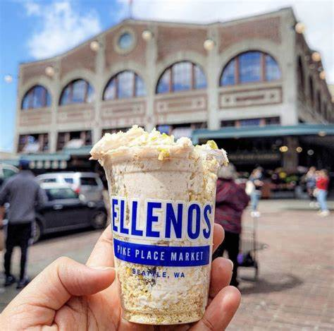

Here are some of the photos of Bai Tong redmond. This is the ambience I was talking about!
This is the Ellenos yogurt in pike place market! This is where my mom and I tried this wonderus creation for the first time.

Lopez Island Ice Creamery is based in anacortes and they also have a little ice cream truck that goes around orcased island!